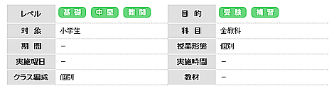

小学生の「学習ポイント」とは？
1.学習習慣の定着
一人ひとりにあった勉強内容で、早いうちから自主的な学習習慣をつけていきます。
2.授業の補習
わからない問題も納得いくまで一緒に取り組み解決し、苦手意識を自信にかえていきます。
3.中学受験対策
情熱講師が、 マンツーマンで志望校に合わせた指導を行います。

1.学習習慣の定着 〜机に向かう習慣をつける！〜
授業は学校の授業の予習・復習を中心に進め、原則として毎回宿題を出します。塾で楽しみながら勉強し、毎回の宿題にしっかりと取り組むことで、自然と学習習慣が定着します。小学生のうちから自主的な学習習慣をつくることはとても大切なことですので、当塾ではしっかりと指導を行っていきます。
2.授業の補習 〜徹底指導で苦手克服を目指す！〜
学校の授業しっかり受けていても、苦手な科目や単元を克服するには一人の力では難しいことも出てきます。当塾では、授業の中で一人ひとりの苦手を発見し、理解できるまで指導します。また、さまざまなレベルの問題演習を行うことで、一段上の力をつけていきます。 「わからない」が「わかった！」になるまで、とことん向き合います。
3.中学受験対策 〜個別だからこそ、志望校に合わせた指導ができる！〜
私立中受験に精通した講師がマンツーマンで指導します。授業ではレベルの高い特殊な問題にもたくさん挑戦し、実践力の向上を目指します。また、受験までの学習スケジュールを個々に設定し、無理なく無駄なく学習ができるよう、アドバイスさせて頂きます。きめ細やかな指導で一人ひとりの個性・能力を引き出し、将来の可能性を広げていきます。